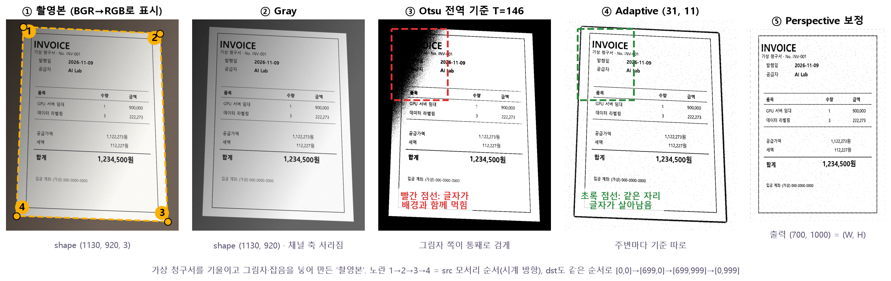
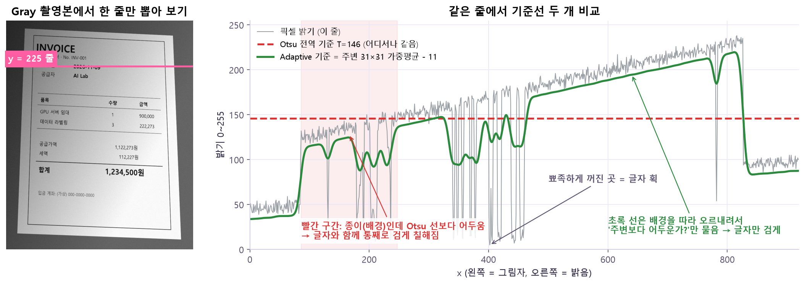
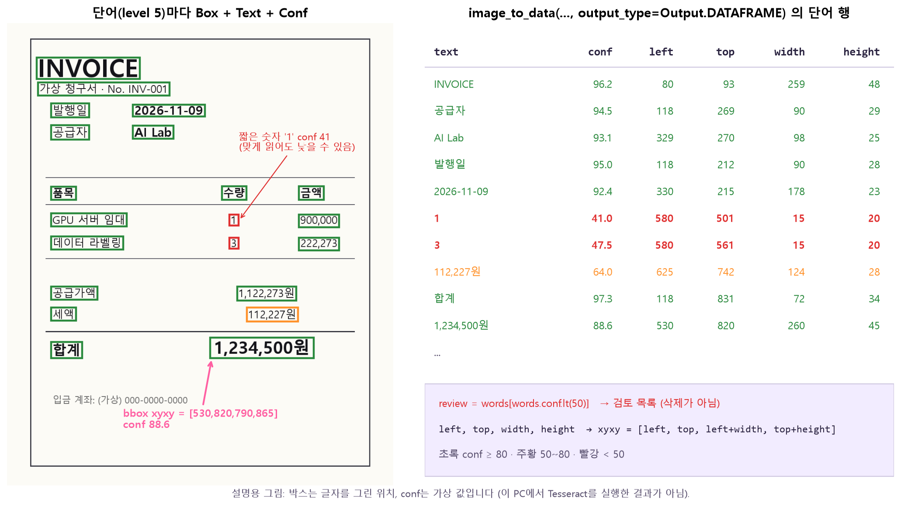
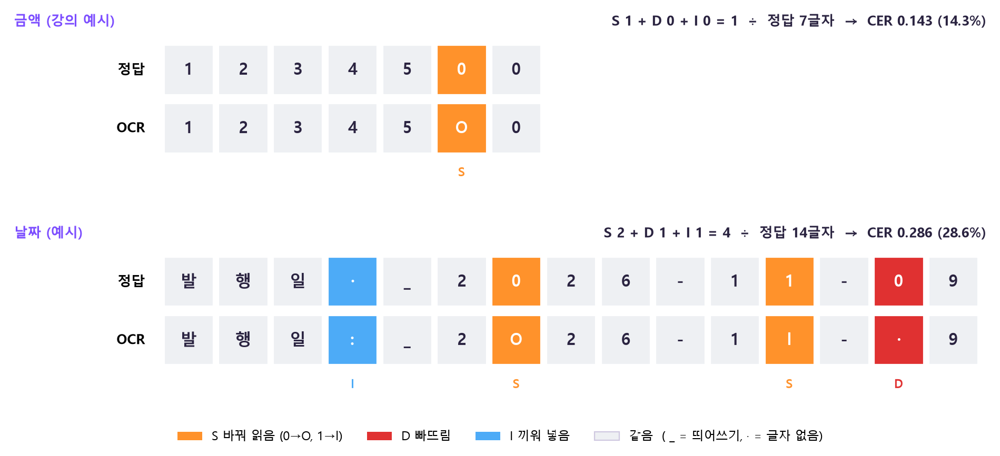
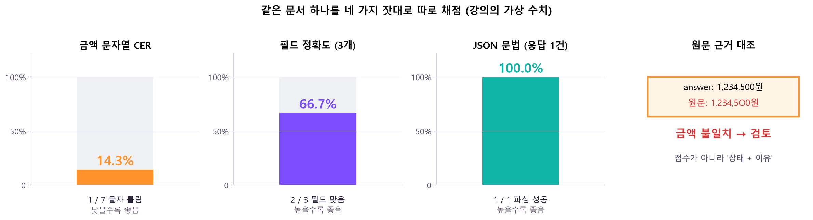
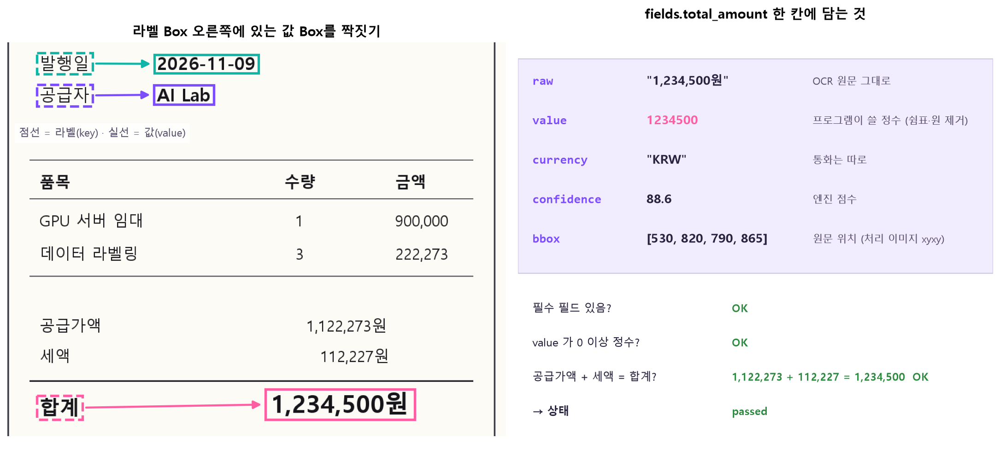
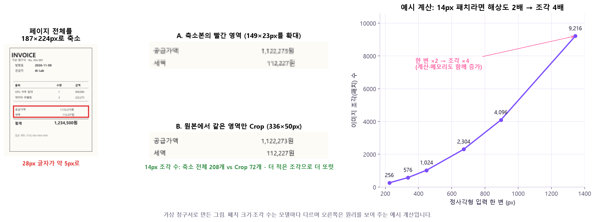
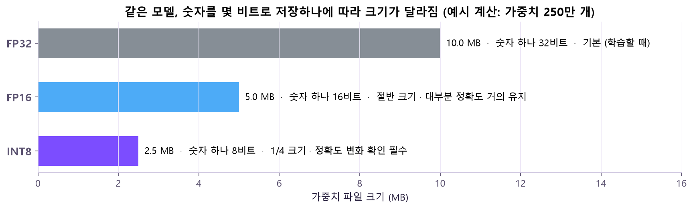

import pytesseract, from pytesseract import Output
(표준 라이브러리) re, json, datetime, dataclasses
정규식으로 날짜·금액 찾기, JSON 저장, 날짜 검증, 결과 구조 정의
import re, json (설치 불필요)
VLM을 실제로 돌릴 때 (준비된 모델이 있을 때만)
transformers
VLM 모델·Processor 불러오기, pipeline, 답 생성
from transformers import pipeline, AutoProcessor, AutoModelForImageTextToText
torch
모델이 내부에서 쓰는 계산 엔진 (Day9부터 설치됨)
import torch
배포 (pip 아님) — TensorRT(trtexec 명령 포함)·JetPack·DeepStream은 NVIDIA가 장치·버전별로 따로 배포하는 소프트웨어예요. 수업 기준은 PC의 TensorRT 11.3, Jetson은 그 JetPack이 지원하는 조합.
🔧 설치 · 확인
python -m pip install opencv-python numpy pandas pytesseract
python -c "import cv2, pytesseract; print(cv2.__version__, pytesseract.get_tesseract_version())"
tesseract --version # 진짜 OCR 엔진 프로그램이 깔려 있나?
tesseract --list-langs # kor, eng 언어 데이터가 있나?
# (선택) VLM
python -m pip install transformers
# (선택) 배포 — NVIDIA GPU + TensorRT가 설치된 환경에서
trtexec --help
⚠️ pip install pytesseract만으로는 글자를 못 읽어요! pip는 Python 쪽 연결 고리만 깔아요. 실제로 글자를 읽는 Tesseract 실행 파일과 kor·eng 언어 데이터를 따로 설치해야 해요. PATH에 없으면 실행 파일 위치를 직접 알려 줘요.
🤔 왜 엔진이 따로야? — Tesseract는 C++로 만든 독립 프로그램이에요. pytesseract는 그 프로그램에 이미지를 넘기고, 나온 글자를 Python 값으로 받아 주는 "통역사"일 뿐이에요. 그래서 통역사만 있고 엔진이 없으면 TesseractNotFoundError가 나요.
⚠️ torch는 다시 깔지 마세요(맞춰 둔 CUDA 버전이 꼬일 수 있어요). 그리고 환경 기록이 중요해요: Python·패키지·모델·언어 데이터 버전과 장치를 적어 두지 않으면 같은 코드라도 다른 글자가 나올 수 있어요.
💡 pip 이름 ≠ import 이름: opencv-python → cv2. 그리고 pip 패키지 pytesseract ≠ 프로그램 tesseract. pipeline(device_map="auto")를 쓰려면 보통 accelerate 패키지도 필요해요.
이거 어디에 써?
Day13~15는 사진의 픽셀·물체를 다뤘어요(OpenCV, 분류, YOLO). Day16은 사진 속 글자를 읽고, 문서에 질문하고, 그 결과를 근거와 함께 업무 데이터로 남기는 "문서 AI"예요. 마지막엔 이런 모델을 현장 장비에서 돌리는 배포 구조까지 봐요.
🧾
청구서 · 영수증공급자·발행일·합계를 JSON으로 자동 추출
🔎
검색 가능한 PDF스캔 이미지 위에 보이지 않는 글자 층을 깔기
💬
문서 질의응답"합계 금액과 근거 위치를 알려줘"
📷
현장 영상 분석Jetson + DeepStream으로 카메라 옆에서 추론
오늘 만드는 문서 AI의 전체 모양이에요. 핵심은 "값만 남기지 않는다" — 값이 어디서 왔는지(원문·위치), 믿어도 되는지(검증 상태)를 같이 남겨요.
무엇을 보나: 왼쪽 문서가 위쪽 OCR 길(전처리 → 글자·위치·점수)과 아래쪽 VLM 길(원본이나 잘라 낸 부분 + 질문 → 답변·근거 후보)로 갈라졌다가, 가운데 구조화·검증에서 다시 만나요. 오른쪽 점선 상자가 최종 산출물이에요. 🤔 왜? OCR은 "정확히 무슨 글자가 어디 있나"에 강하고, VLM은 "이게 무슨 뜻인가"에 강해요. 둘 다 틀릴 수 있으니 마지막에 원문·규칙과 대조하는 단계가 꼭 있어야 하고, 대조 결과(검토 이유)까지 남겨야 사람이 다시 확인할 수 있어요.
⚠️ 처음부터 지킬 원칙 4가지 — ① 개인정보·기밀: 외부 OCR·VLM 서비스에 올리기 전 허용 범위 확인. ② 원본 보존: 원본·전처리본·OCR 결과·최종 JSON을 따로 저장. ③ 사실성: 자연스러운 답보다 원문 문자열·좌표가 우선. ④ 평가: 샘플 몇 개 성공이 아니라 문서 유형·해상도·언어·표 구조별 오류를 기록.
① 문서 전처리 — 읽기 좋은 사진으로 다듬기
OCR(Optical Character Recognition)은 이미지에서 글자를 읽는 전체 과정이에요: 입력 획득(스캔·사진·PDF·캡처) → 전처리 → 문자 인식(글자·단어·줄 + 신뢰도·위치) → 후처리(읽기 순서·띄어쓰기·단위·날짜·금액 정리) → 정보 추출(JSON·표·검색). 그중 첫 단추가 전처리예요.
문서 이미지가 어려운 이유
예
촬영·스캔 문제
회전·원근으로 글줄이 기울어짐 · 그림자·반사광으로 같은 배경도 밝기가 다름 · 압축·흔들림·저해상도로 글자 획이 사라짐 · 배경 무늬·도장·서명이 글자와 겹침
문서 구조 문제
다단·표·머리글·각주·세로쓰기 등 읽기 순서 · 0/O, 1/l/I처럼 닮은 글자 · 혼합 언어·특수기호·통화 · 글자가 아닌 체크박스·선·바코드
사진 문서 기울기·그림자·노이즈→Gray 색 → 밝기 1채널→Threshold 글자 0 / 배경 255→Perspective 정면으로 펴기→OCR

무엇을 보나: 가상 청구서를 일부러 기울이고 왼쪽 위에 그림자를 넣은 "촬영본"(①)이에요. ② Gray는 채널 축이 사라져 shape가 (1130, 920)이 돼요. ③ Otsu는 사진 전체에 기준 하나(T=146)를 써서 빨간 점선 안 그림자 쪽이 통째로 검게 먹혔어요. ④ Adaptive는 같은 자리 글자가 살아 있어요. ⑤ 노란 1→2→3→4 모서리를 (700, 1000) 크기로 펴니 반듯한 문서가 됐어요. 🤔 왜? OCR 엔진은 "반듯하고, 글자와 배경이 확실히 갈리는" 입력을 전제로 줄을 나누고 글자를 읽어요. 그림자는 대비를, 기울기는 줄 나누기를 망가뜨리니 읽기 전에 그 전제에 맞춰 주는 거예요.
🔧 명령어: 읽기 · Gray 변환 cv2.imread() · cv2.cvtColor()
import cv2
image = cv2.imread("invoice.png", cv2.IMREAD_COLOR)
if image is None:
raise FileNotFoundError("invoice.png")
gray = cv2.cvtColor(image, cv2.COLOR_BGR2GRAY)
print("BGR shape:", image.shape) # (H, W, 3)
print("Gray shape:", gray.shape) # (H, W)
if not cv2.imwrite("gray.png", gray):
raise OSError("gray.png 저장 실패")
GRAYSCALE면 처음부터 1채널로 읽어 cvtColor가 필요 없어요. UNCHANGED면 투명도(알파) 채널까지 4채널로 와요
code (필수)
변환 방향 상수. COLOR_BGR2GRAY, COLOR_BGR2RGB …
imread 결과는 BGR이라 RGB2GRAY를 쓰면 빨강·파랑 가중치가 바뀌어 밝기가 미묘하게 달라져요
dstCn
출력 채널 수 (보통 0 = 자동)
건드릴 일이 거의 없어요
⚠️ 원본 파일은 덮어쓰지 않고 다른 경로에 저장해요. cv2.imwrite도 실패하면 예외 대신 False를 돌려주니 반환값을 확인해요.
이진화 — 전역 Otsu vs 적응형 Adaptive
이진화(Threshold)는 밝기 0~255인 Gray를 기준선으로 갈라 글자 0 / 배경 255 두 값만 남기는 거예요(Day13 ④에서 자세히 봤어요). 문서에서는 그림자 때문에 "기준선 하나"가 자주 실패해요.

무엇을 보나: 왼쪽 분홍 줄(y=225)의 밝기를 오른쪽에 그렸어요. 회색 선이 실제 밝기 — 왼쪽으로 갈수록 그림자 때문에 종이도 어두워지고, 뾰족하게 꺼진 곳이 글자 획이에요. 빨간 점선(Otsu, 146)은 어디서나 같은 높이라 빨간 구간의 종이까지 선 아래로 떨어져 검게 칠해져요. 초록 선(Adaptive)은 배경 밝기를 따라 오르내리며 늘 배경보다 조금 아래에 있어서 글자 획만 그 아래로 내려가요. 🤔 왜? Adaptive는 "전체에서 어두운가?"가 아니라 "내 주변보다 어두운가?"를 물어요. 그림자는 글자와 주변 종이를 같이 어둡게 만드니, 주변과 비교하면 그림자 효과가 상쇄돼요.
OTSU를 빼면 0이 진짜 기준이 돼서 거의 전부 흰색이 돼요. 반환값 otsu_t에 실제 고른 기준이 들어와요
maxValue (255)
조건을 만족한 픽셀에 넣을 값
1로 하면 0/1 이미지 — 눈으로는 거의 검게 보여요
adaptiveMethod
MEAN_C(주변 단순 평균) · GAUSSIAN_C(가운데에 더 무게를 둔 평균)
GAUSSIAN이 가까운 픽셀을 더 믿어서 경계가 조금 더 매끄러워요
thresholdType
BINARY(밝으면 흰색) · BINARY_INV(반대)
INV면 글자가 흰색, 배경이 검정 — 이후 처리(윤곽 찾기 등)가 "흰색 = 물체"를 기대할 때 써요
blockSize (31)
주변 영역 한 변 크기. 3 이상 홀수
작으면 글자 획 안쪽까지 "주변"으로 잡혀 굵은 글자 속이 비거나 종이 결이 점으로 남아요. 크면 그림자 변화를 못 따라가 Otsu처럼 돼요. 홀수인 이유: 가운데 픽셀이 딱 하나 있어야 해서
C (11)
주변 평균에서 빼는 상수
클수록 기준이 더 낮아져 "확실히 어두운 것"만 검게 → 잡점↓, 흐린 글자는 사라질 수 있어요. 작거나 음수면 종이 결까지 검게 찍혀요
🤔 왜 눈으로 보기 좋은 결과를 고르면 안 돼? — 사람에게 깨끗해 보이는 이미지와 OCR 오류율이 낮은 이미지는 항상 같지 않아요. 그래서 설정은 개발·검증 문서의 CER(③)로 고르고, 최종 평가 문서는 그 선택 과정에서 빼 둬요. 최종 문서를 보며 고르면 그 문서에 맞춘 선택이 돼서 점수가 부풀어요.
원근 보정 — 비스듬한 문서를 정면으로
문서를 비스듬히 찍으면 사각형이 사다리꼴이 돼요. 실제 문서의 네 모서리(src)와 펼친 뒤 네 모서리(dst)를 짝지으면, 둘을 잇는 3×3 변환 행렬 M이 하나 정해져요. 아래 왼쪽 사진의 번호 점 4개를 끌어 보세요. 오른쪽이 그 점들로 편 결과예요.
순서가 어긋나면 문서가 뒤집히거나 꼬여요. 모서리를 문서 밖에 찍으면 배경이 딸려 오고, 안쪽에 찍으면 가장자리 글자가 잘려요
dsize(700, 1000)
출력 크기 (width, height)
배열 shape는 (H, W)인데 여기는 (W, H)! 바꿔 넣으면 가로로 납작한 문서가 돼요. dst 좌표(699, 999)와도 맞춰야 해요
flags
새 픽셀 값을 주변에서 어떻게 계산할지 (INTER_LINEAR = 주변 4칸 가중 평균)
INTER_NEAREST는 빠르지만 글자 가장자리가 계단처럼 깨져요
borderMode / borderValue
원본 밖을 가리키는 픽셀을 채우는 방법 / 그 색
흰색(255)이 아니면 가장자리에 검은 띠가 생겨 OCR이 글자로 오해할 수 있어요
🤔 왜 점이 꼭 4개야? — 원근 변환 행렬 M에는 정해야 할 숫자가 8개 있어요(9칸 중 마지막은 1로 고정). 점 하나가 x·y 식 두 개를 주니까, 4쌍이면 딱 8개 식이 생겨 M이 하나로 정해져요. 3개면 모자라고, 5개 이상이면 "가장 잘 맞는" M을 따로 구해야 해요.
⚠️ 좌표계 주의 — 보정본에서 나온 OCR Box는 보정본 좌표예요. 원본 사진 위에 그리려면 M의 역변환으로 되돌려야 해요. 그래서 JSON에 어떤 이미지 기준 좌표인지(coordinate_space)와 이미지 크기를 같이 적어요.
② OCR 실행 — Text · Box · Confidence
OCR 엔진 안을 확대해 보면 네 단계가 보여요. 엔진 하나가 다 하기도 하고, 단계별로 다른 부품을 쓰기도 해요.
무엇을 보나: 위 네 칸이 단계, 아래가 각 단계에서 다루는 모습이에요. ① 기울어진 전체 문서를 점검하고, ② 보라 상자처럼 글자 덩어리·줄·표(점선) 영역을 나누고, ③ 한 줄씩 잘라 문자열 + 점수 + 위치로 바꾸고, ④ 제목 → 본문 → 표 → 합계 순서로 정리해요. 🤔 왜? 단계가 나뉘어 있어서 실패도 단계별로 따져야 해요. ②에서 영역을 못 찾으면 ③은 손도 못 대고(놓침), ④가 틀리면 글자는 다 맞아도 "합계"와 "1,234,500원"이 엉뚱한 짝이 돼요.
OCR 결과 형식
들어 있는 것
Plain text
전체 문자열 — 빠르게 확인용 (image_to_string)
TSV / DataFrame
단어별 text · conf · left · top · width · height (image_to_data)
hOCR / ALTO XML
페이지 · 문단 · 줄 · 단어 구조와 위치
Searchable PDF
이미지 위에 보이지 않는 텍스트 층 → 검색·복사 가능
Custom detector + recognizer
영역 탐지 모델과 문자 인식 모델을 따로 쓰는 구조
PSM — "페이지가 이렇게 생겼다"는 가정
PSM(Page Segmentation Mode)은 Tesseract에게 "이 이미지는 이런 모양이야"라고 미리 알려 주는 설정이에요. 가정이 틀리면 같은 글자도 엉뚱하게 나눠 읽어요.
무엇을 보나: 각 PSM이 "이미지 안에 무엇이 있다고 가정하는지"예요. 3은 제목·2단·표(점선)를 스스로 나누고, 6은 통째로 한 블록, 7은 한 줄, 8은 한 단어로 봐요. 🤔 왜? 이미 한 줄만 잘라서 넣었는데 PSM 3으로 "페이지 분할"을 시키면, 엔진이 없는 단·블록을 찾다가 줄을 쪼개거나 빈칸을 글자로 오해할 수 있어요. 입력이 단순할수록 가정도 단순하게 주는 게 유리해요(항상 그런 건 아니니 검증 문서로 비교해요).
🔧 명령어: 단어별 결과 받기 pytesseract.image_to_data()
import pytesseract
from pytesseract import Output
ocr = pytesseract.image_to_data(
binary, lang="kor+eng", config="--oem 3 --psm 6",
output_type=Output.DATAFRAME,
pandas_config={"keep_default_na": False,
"dtype": {"text": str}},
)
words = ocr[
ocr.level.eq(5) & ocr.text.str.strip().ne("") # 단어 행 + 빈 글자 제외
].copy()
review = words[words.conf.lt(50)] # 점수 낮은 단어 = 검토 목록
columns = ["text", "conf", "left", "top", "width", "height"]
print(words[columns])
인자
뜻
바꾸면?
image (필수)
PIL Image · RGB/Gray 배열 · 파일 경로
OpenCV 컬러 배열(BGR)을 그대로 주면 색 순서가 달라요 → Gray·이진화본이나 COLOR_BGR2RGB로 바꿔서
lang
언어 데이터 조합 "kor", "eng", "kor+eng"
설치 안 된 언어면 에러. eng만 주면 한글을 영어 글자로 억지로 읽어 엉망이 돼요. 언어를 많이 붙일수록 후보가 늘어 느려지고 헷갈릴 수 있어요
config="--oem 3"
인식 엔진 모드 (3 = 사용 가능한 기본 엔진)
보통 3 그대로
config="--psm 6"
페이지 모양 가정 (위 그림)
한 줄 Crop이면 7, 단어 하나면 8이 더 맞을 수 있어요
output_type
STRING(기본, TSV 글자) · DICT · DATAFRAME
DATAFRAME이면 pandas로 바로 거르고 저장. DICT면 리스트 묶음
timeout
초 단위 제한 (0 = 무제한)
설정하면 큰 이미지에서 멈춘 듯 오래 걸리는 걸 끊을 수 있어요
pandas_config
DataFrame 만들 때 넘기는 read_csv 옵션
아래 🤔 참고 — 빼면 일부 글자가 사라지거나 바뀌어요
🤔 왜 keep_default_na=False, dtype={"text": str}? — pandas는 표를 읽을 때 "NA", "null" 같은 글자를 "값 없음(NaN)"으로, "0012"를 숫자 12로 알아서 바꿔요. 문서에 진짜로 "NA"라고 적혀 있거나 문서번호가 0으로 시작하면 원문이 망가지죠. 이 두 옵션으로 OCR이 읽은 글자를 글자 그대로 보존해요.
🤔 왜 level == 5? — image_to_data는 페이지(1) · 블록(2) · 문단(3) · 줄(4) · 단어(5) 행을 한 표에 섞어서 줘요. 위쪽 단계 행은 글자 칸이 비어 있고 위치만 있어요. 단어만 쓰려면 5번 행만 골라야 해요.

무엇을 보나: (설명용 그림 — 박스는 글자를 그린 위치, conf는 가상 값이에요) 왼쪽 단어 박스 하나 = 오른쪽 표 한 줄. 박스 색이 conf예요(초록 ≥ 80, 주황 50~80, 빨강 < 50). 합계 금액은 강의 예시와 같은 bbox [530,820,790,865], conf 88.6. 표의 left·top·width·height를 [left, top, left+width, top+height]로 바꾸면 xyxy가 돼요. 🤔 왜? 수량 1, 3처럼 짧은 숫자는 엔진이 비교할 앞뒤 글자가 없어서 맞게 읽어도 점수가 낮게 나오기 쉬워요. 그래서 낮은 점수를 "삭제"가 아니라 "사람이 볼 목록(review)"에 넣는 거예요.
Confidence로 할 수 있는 것
주의할 것
낮은 점수 단어를 검토 목록에 넣기
엔진마다 점수의 크기·의미가 달라요
같은 필드 후보 중 상대적으로 높은 것 고르기
짧은 숫자·기호는 낮아도 맞을 수 있어요
문서 유형별 점수 분포 지켜보기
높은 점수가 문맥상 맞다는 보장은 없어요
box와 원본 crop을 같이 저장해 사람이 검토
기준 하나로 모든 문서를 자동 삭제하지 않기
⚠️ conf 90 ≠ "90% 확률로 맞음" — 엔진 내부의 신뢰 점수일 뿐, 문맥상 정답률과 같지 않아요. 그리고 50은 설명용 기준이에요. 원본 OCR 결과는 지우지 말고 보관해요.
💡 객체탐지의 box와 OCR의 word box는 둘 다 "위치"예요. 차이는 OCR box에는 문자열·줄·블록 정보가 함께 붙는다는 것.
③ OCR 품질 평가 — 글자 · 단어 · 필드를 따로
지표
계산
질문
CER
(치환 + 삭제 + 삽입) / 정답 글자 수
글자 단위로 얼마나 틀렸나? (낮을수록 좋음)
WER
(치환 + 삭제 + 삽입) / 정답 단어 수
단어 단위로 얼마나 틀렸나?
Field accuracy
날짜·금액·문서번호 등 필수 항목이 정확한 비율
업무에 쓸 값이 맞았나?
구조 평가
읽기 순서·표 셀·Box별 기준과 분모를 정해서
순서·칸 관계가 맞았나?
Latency
페이지당 전처리 · OCR · 후처리 시간을 각각
어디서 느린가?
편집 거리(Levenshtein distance)는 "정답을 OCR 결과로 바꾸려면 글자를 최소 몇 번 고쳐야 하나"예요. 고치는 방법은 세 가지: S 다른 글자로 바꾸기, D 지우기(OCR이 빠뜨림), I 끼워 넣기(OCR이 없는 걸 추가).

무엇을 보나: 위는 강의 예시 — 정답 1234500을 12345O0로 읽었어요. 숫자 0을 영문 O로 바꾼 S 1번 → CER = 1/7 ≈ 14.3%. 아래는 날짜 예시로 S·D·I가 모두 나와요: :를 끼워 넣고(I), 0→O·1→l로 바꾸고(S), 0을 빠뜨렸어요(D). 🤔 왜? 줄을 이렇게 맞춰 봐야 "어떤 실수를 했는지"가 보여요. 그리고 7글자 중 1글자(14%)만 틀려도 그게 금액이면 필드 값은 통째로 틀린 거라, CER과 필드 정확도를 따로 봐요.
직접 해 보세요. 금액·날짜를 바꿔 넣으면 CER, S·D·I, 그리고 "숫자만 뽑았을 때 필드 값이 같은지"가 함께 바뀌어요.
S 0 · D 0 · I 0
편집 거리 0 ÷ 정답 0글자
CER = 0.000
🔧 명령어: CER 계산 함수
def levenshtein(a: str, b: str) -> int:
dp = list(range(len(b) + 1)) # 빈 문자열 → b의 앞 j글자: j번 삽입
for i, ca in enumerate(a, start=1):
prev, dp[0] = dp[0], i
for j, cb in enumerate(b, start=1):
old = dp[j]
dp[j] = min(
dp[j] + 1, # 삭제 (D)
dp[j - 1] + 1, # 삽입 (I)
prev + (ca != cb), # 치환 (S) — 같으면 +0
)
prev = old
return dp[-1]
def cer(reference: str, prediction: str) -> float:
if not reference:
raise ValueError("빈 정답 문서는 별도 평가합니다")
errors = levenshtein(reference, prediction)
return errors / len(reference)
코드 · 규칙
뜻
바꾸면?
dp 한 줄
표 전체 대신 직전 줄만 기억하며 최소 횟수를 채움
결과는 같고 메모리만 아껴요
prev + (ca != cb)
두 글자가 같으면 비용 0, 다르면 1(치환)
치환 비용을 2로 하면 "지우고 넣기"와 같아져 다른 지표가 돼요
len(reference)
분모 = 정답 글자 수
OCR 결과 길이로 나누면, 글자를 잔뜩 빠뜨린 결과가 오히려 점수가 좋아 보여요
빈 정답 → ValueError
0으로 나누기 방지 + 따로 집계
조용히 0점 처리하면 "글자 없는 페이지에 글자를 지어낸" 오류가 숨어요
정규화 규칙
공백·대소문자·기호를 비교 전에 어떻게 다룰지 먼저 고정
규칙이 바뀌면 같은 결과도 CER이 달라져요(위 체험의 체크박스)
🤔 왜 문서별 평균과 micro CER을 구분해? — 문서별 CER을 평균 내면 10글자짜리 영수증과 2,000글자짜리 계약서가 같은 무게예요. micro CER은 전체 오류 수 ÷ 전체 정답 글자 수라서 글자 하나하나가 같은 무게예요. 짧은 문서 몇 장이 크게 틀리면 두 값이 크게 달라지니, 어떤 걸 보고했는지 적어요.

무엇을 보나: 강의의 가상 수치예요. 같은 문서 한 장인데 금액 CER은 14.3%(1/7 글자), 필드 정확도는 66.7%(3개 중 2개), JSON 문법은 100%(파싱 성공), 원문 근거는 "금액 불일치 → 검토"예요. 🤔 왜? 잣대마다 보는 단위와 분모가 달라서예요. JSON이 완벽해도 값이 틀릴 수 있고, CER이 낮아도 그 한 글자가 금액이면 업무상 실패예요. 그래서 하나로 합치지 않고 같은 문서·정답·정규화 규칙에서 따로 비교해요.
④ 구조화 — 글자를 업무 데이터(JSON)로
OCR 문자열은 그냥 긴 글이에요. 프로그램이 쓰려면 "발행일은 2026-11-09, 합계는 정수 1234500" 같은 필드로 바꿔야 해요. 이걸 후처리라고 하고 다섯 단계로 해요.
정규화 공백·통화·날짜·숫자 형식 통일→영역화 제목·표·합계·서명 블록→필드 추출 번호·날짜·공급자·합계→검증 합계 = 공급가 + 세금→출력 원문·값·box·conf·상태
🔧 명령어: 정규식으로 날짜 · 금액 찾기 re.search()
import re
from datetime import date
text = "발행일 2026-11-09 합계 1,234,500원"
date_pat = r"(20\d{2})[-./](\d{1,2})[-./](\d{1,2})"
money_pat = (r"합계\s*"
r"([0-9]{1,3}(?:,[0-9]{3})+|[0-9]+)\s*원")
dm = re.search(date_pat, text)
am = re.search(money_pat, text)
issued_at, total = None, None
if dm:
try:
issued_at = date(*map(int, dm.groups())).isoformat() # 진짜 있는 날짜인지 검사
except ValueError:
pass # 2026-13-45 같은 건 None으로
if am:
total = int(am.group(1).replace(",", ""))
print(issued_at, total) # 2026-11-09 1234500
패턴 조각
뜻
바꾸면?
r"..."
raw string — \d의 역슬래시를 Python이 먼저 건드리지 않게
r을 빼면 \b 같은 건 다른 뜻(백스페이스)이 돼 버려요
(20\d{2})
20으로 시작하는 4자리 연도 — 괄호는 "이 부분 따로 꺼내기(그룹)"
\d{4}로 넓히면 전화번호 앞자리도 연도로 잡힐 수 있어요
[-./]
구분자로 -, ., / 중 하나
문서마다 표기가 달라서 여러 개를 허용해요. 2026. 11. 9처럼 공백이 끼면 \s*도 필요
[0-9]{1,3}(?:,[0-9]{3})+
쉼표 세 자리 묶음 숫자 ((?:...)는 꺼내지 않는 묶음)
|[0-9]+가 쉼표 없는 숫자도 받아요
합계\s* … \s*원
"합계" 라벨 뒤의 금액만
라벨을 빼면 공급가액·세액 숫자까지 후보가 돼요
함수 · 인자
뜻
바꾸면?
re.search(pattern, string, flags=0)
패턴의 첫 후보를 찾아 Match 객체, 없으면 None
모든 후보가 필요하면 re.findall/finditer. None 검사를 빼면 .group()에서 에러
re.sub(pattern, repl, string, count=0, flags=0)
패턴에 맞는 부분을 바꾼 새 문자열 (예: re.sub(r"[^0-9]", "", "1,234,500원") → "1234500")
count=1이면 첫 번째만 바꿔요. 원래 문자열은 안 바뀌어요
flags
re.IGNORECASE(대소문자 무시), re.MULTILINE(줄마다 ^ $)
"Total"/"TOTAL"을 한 패턴으로 잡을 때 IGNORECASE
🤔 왜 패턴으로 찾고 date()로 또 검사해? — 정규식은 "모양"만 봐요. 2026-13-45도 모양은 날짜예요. date(2026, 13, 45)는 ValueError를 내니까, 패턴은 후보 찾기, date는 진짜인지 확인으로 역할을 나눠요. 그리고 실패하면 아무 값이나 넣지 말고 None으로 남겨요.
Key-value — "라벨 · 값 · 근거"를 한 묶음으로

무엇을 보나: 왼쪽은 라벨(점선) 오른쪽에 있는 값(실선)을 짝지은 모습이에요. 오른쪽은 그중 합계 한 칸에 담는 정보 — 원문 raw "1,234,500원", 정수 value 1234500, 통화, 점수, 위치 — 와 그 아래 검증(공급가액 1,122,273 + 세액 112,227 = 합계 1,234,500 → passed)이에요. 🤔 왜? value만 남기면 나중에 "1234500은 어디서 왔지?"를 확인할 길이 없어요. raw와 bbox가 있으면 원본 이미지의 그 자리를 잘라 보며 OCR이 틀렸는지, 정규화가 틀렸는지를 바로 가를 수 있어요.
🤔 왜 정규화한 값만 저장하면 문제야? — 오류가 났을 때 "원래 뭐라고 적혀 있었는지, 어디 있었는지"를 확인할 수 없어요. 실제 기록에는 이미지 경로·적용한 변환·schema version(이 JSON 모양의 버전)도 같이 남겨요.
표 추출 — 글자보다 "셀 구조"가 어렵다
단순 OCR로 되는 경우
추가 모델·규칙이 필요한 경우
선이 분명하고 병합 셀이 거의 없음
선 없는 표 · 여러 줄 헤더 · 병합 셀
열 수와 위치가 문서마다 일정
문서마다 열 위치·폭이 크게 다름
각 셀을 crop해 한 줄 OCR(PSM 7)로 읽을 수 있음
읽기 순서와 "이 글자가 어느 셀 소속인지"를 따로 예측해야 함
합계·수량·단가 관계로 오류를 검증할 수 있음
문자 인식보다 구조 복원이 더 어려움
🤔 왜 표 OCR ≠ 표 구조 인식? — "900,000"이라는 글자를 정확히 읽어도, 그게 "GPU 서버 임대" 행의 "금액" 열인지 모르면 쓸 수가 없어요. 글자 읽기와 행·열 관계 복원은 다른 문제라 따로 평가해요.
🔧 명령어: 업무 규칙으로 검증 validate_invoice()
규칙
예
필수 필드
document_id · issued_at · supplier · total_amount
형식
날짜는 ISO 8601(2026-11-09), 금액은 정수, 통화는 별도 필드
관계
공급가액 + 세액 = 합계, 수량 × 단가 ≈ 금액
범위
날짜·금액·수량이 허용 범위 안인지
상태
passed · warning · failed + 사람이 확인할 이유
def validate_invoice(doc: dict) -> list[str]:
if not isinstance(doc, dict):
return ["입력은 객체여야 합니다"]
errors = []
if not doc.get("document_id"):
errors.append("document_id 누락")
fields = doc.get("fields", {})
if not isinstance(fields, dict):
return errors + ["fields는 객체여야 합니다"]
for name in ["issued_at", "supplier", "total_amount"]:
item = fields.get(name)
value = item.get("value") if isinstance(item, dict) else None
if value is None or value == "":
errors.append(f"필수 필드 누락: {name}")
elif name == "total_amount":
if type(value) is not int or value < 0:
errors.append("합계는 0 이상의 정수여야 합니다")
return errors
코드
뜻
바꾸면?
isinstance(doc, dict) 먼저
모양을 확인한 뒤에 필드에 접근
빼면 리스트·None이 들어올 때 .get에서 프로그램이 죽어요
value is None or value == ""
"없음"만 누락으로 봄
if not value:로 쓰면 금액 0도 누락으로 처리돼요 (0은 거짓으로 취급되니까)
type(value) is not int
정확히 int만 금액으로 인정
isinstance(value, int)로 쓰면 True도 통과해요 — Python에서 bool은 int의 한 종류(True == 1)라서
오류 목록 반환
문제를 전부 모아서 돌려줌
첫 오류에서 멈추면 사람이 여러 번 고쳐야 해요
⚠️ 검증에 실패했다고 0이나 빈 문자열로 자동 치환하면 안 돼요. 진짜 0원과 "못 읽음"이 구분되지 않아요. warning·failed 상태와 이유를 남기고 사람이 보게 해요. 날짜·문자열·좌표까지 전부 검사하려면 이 함수를 Schema(데이터 모양 규칙)로 확장해요.
⑤ VLM — 이미지를 보고 질문에 답하는 모델
VLM(Vision-Language Model)은 이미지와 글(질문)을 함께 입력받아 글로 답하는 모델이에요. OCR과 잘하는 일이 달라요.
OCR
VLM
강점
문자·단어·줄을 그대로 받아 적고 위치를 연결 · 규칙 후처리와 결합하기 쉬움 · 숫자·문서번호 · 유형별 품질·비용을 직접 비교
이미지와 질문을 함께 보고 문맥을 설명 · 표·도식·화면 구성의 의미를 종합 · 문서 유형이 다양해도 유연하게 질의응답
약점
구조·의미 이해는 따로 만들어야 함
자연스러운 오답과 근거 없는 추론 가능성
무엇을 보나: 왼쪽 messages의 이미지 항목과 질문 항목이 Processor를 지나 각각 pixel_values(숫자 이미지)와 input_ids(토큰 번호)가 돼요. 이미지는 Vision Encoder가 특징으로 바꾸고 Projector가 그 특징을 "언어 모델이 알아듣는 공간"으로 옮긴 뒤, 질문 토큰과 함께 언어 모델에 들어가 답을 한 토큰씩 만들어요. 🤔 왜? 언어 모델은 원래 글자 토큰만 이해해요. 이미지 특징을 토큰과 같은 모양으로 맞춰 주는 연결 모듈이 있어야 "그림 + 질문"을 한 문장처럼 읽을 수 있어요. 모델마다 입력 키와 연결 방식은 조금씩 달라요.
입력 요소
뜻
role
대화 역할: system · user · assistant
content
문자열 하나가 아니라 image · text 항목의 목록
Processor
이미지 전처리 · 특수 토큰 · Chat template · 토큰화를 한꺼번에
model.generate
준비된 input_ids · attention_mask · pixel_values로 글 생성
⚠️ 모델마다 입력 형식 · 지원 이미지 수 · 해상도 · VRAM(GPU 메모리) 요구량이 달라요. 쓰기 전에 그 모델의 설명서를 확인해요.
단일 장치를 직접 고르려면 device=0(GPU 0번) 등. 메모리가 모자라면 일부가 CPU로 가 느려져요
dtype="auto"
모델 숫자 형식 (float16, bfloat16 …)
16비트는 메모리가 절반이지만 장치가 지원해야 해요
processor
멀티모달 입력 전처리 객체
보통 모델에서 자동으로 불러와서 안 줘도 돼요
max_new_tokens
새로 만들 답의 최대 길이(토큰)
너무 작으면 JSON이 중간에 잘려 파싱 실패. 크면 느려지고 쓸데없는 말이 붙을 수 있어요
return_full_text=False
새 답 부분만 돌려받기
True면 질문(입력)까지 붙어 나와서 답만 따로 잘라야 해요
🔧 명령어: 직접 버전 AutoProcessor · apply_chat_template() · generate()
from transformers import AutoProcessor, AutoModelForImageTextToText
processor = AutoProcessor.from_pretrained(MODEL_ID)
model = AutoModelForImageTextToText.from_pretrained(
MODEL_ID, device_map="auto", dtype="auto",
)
inputs = processor.apply_chat_template(
messages, add_generation_prompt=True, tokenize=True,
return_dict=True, return_tensors="pt",
).to(model.device)
outputs = model.generate(
**inputs, max_new_tokens=128, do_sample=False,
)
ids = outputs[0]
if not model.config.is_encoder_decoder:
ids = ids[inputs["input_ids"].shape[1]:] # 입력 길이만큼 앞부분 잘라 내기
answer = processor.decode(ids, skip_special_tokens=True)
print(answer)
apply_chat_template 인자
뜻
바꾸면?
messages (필수)
role과 content 목록으로 된 대화
content를 문자열 하나로 주면 이미지가 빠져요
add_generation_prompt=True
"이제 assistant가 답할 차례" 표시를 끝에 붙임
False면 모델이 사용자 질문을 이어 쓰는 등 엉뚱하게 시작할 수 있어요
tokenize
False = 포맷된 문자열만 · True = 토큰화까지
False면 결과를 다시 processor에 넣어야 해요
return_dict=True
input_ids · pixel_values 등을 dict로
그래야 **inputs로 generate에 바로 넘길 수 있어요
return_tensors="pt"
PyTorch Tensor로
빼면 파이썬 리스트라 모델에 바로 못 넣어요
num_frames
(비디오 지원 모델) 샘플링할 프레임 수
⑥의 비디오 VLM 참고
generate 인자
뜻
바꾸면?
**inputs (필수)
Processor가 만든 입력 묶음
max_new_tokens
새로 생성할 최대 토큰 수
위 pipeline과 같음
do_sample=False
매번 가장 그럴듯한 다음 토큰을 고름(결정적)
True면 확률대로 뽑아 같은 질문에도 답이 달라질 수 있어요 → 문서 추출에선 재현성이 떨어져요
temperature
샘플링 분포를 평평하게/뾰족하게
do_sample=True일 때만 의미가 있어요. 높을수록 엉뚱한 토큰도 뽑힘
num_beams
Beam search 폭 — 후보 문장 여러 개를 동시에 키워 봄
늘리면 더 좋은 문장을 찾을 수도 있지만 계산이 그만큼 늘어요
use_cache=True
앞에서 계산한 Key/Value를 재사용(KV cache)
끄면 토큰마다 처음부터 다시 계산해 훨씬 느려요
🤔 왜 입력 길이만큼 잘라 내? — 언어 모델만 있는(Decoder-only) 모델의 generate는 질문 토큰 + 새 답 토큰을 이어 붙여 돌려줘요. 앞의 input_ids 길이만큼 잘라야 답만 남아요. 인코더-디코더 구조는 처음부터 답만 돌려줘서 자를 필요가 없어요(is_encoder_decoder로 구분).
🤔 왜 Chat template은 Tokenizer가 아니라 Processor에? — 멀티모달 대화에는 "여기에 이미지가 들어간다"는 특수 토큰과 이미지 전처리가 함께 필요해요. 글자만 다루는 Tokenizer로는 이미지 자리를 만들 수 없어서, 둘을 다 가진 Processor가 맡아요.
⚠️ 모델 구조 · 전처리 · 생성 조건(max_new_tokens, do_sample 등)과 모델 ID를 실행 기록에 남겨요. 같은 질문이라도 조건이 바뀌면 답이 달라져요.
⑥ 근거 검증 · OCR+VLM Hybrid · 보안
VLM 답이 자연스럽다고 사실은 아니에요. 그래서 "보고 말한 것"과 "추측한 것"을 구분해요.
용어
뜻
예
관찰
이미지에 실제로 보이는 글자·색·표·물체를 설명
"합계 칸에 1,234,500원이 있어요"
추론
문서 목적·의도·원인·법적 의미를 추정
"이 회사는 GPU를 많이 쓰는 것 같아요"
Hallucination
보이지 않는 값·표·근거를 자연스럽게 지어냄
문서에 없는 "부가세 포함" 문구를 인용
Grounding
답과 함께 원문 문자열·페이지·Box·Crop을 제시
evidence "1,234,500원", page 1, bbox [...]
Fallback
근거가 부족하면 "확인할 수 없음" + 검토 필요 상태
answer: null, status: review
프롬프트 입력 계약
프롬프트 출력 계약
문서 유형 · 페이지 범위 · 질문을 명시
JSON key와 자료형을 고정
허용 정보는 이미지에 보이는 내용만
answer · evidence · page · bbox를 분리
모르면 null 또는 "확인 불가"로
지원하지 않는 좌표·근거는 null
금액·날짜·문서번호는 원문 문자열도 함께
스키마·원문 검증 실패 → 재시도 또는 사람 검토
🤔 왜 "모르면 null"을 미리 약속해? — 생성 모델은 빈칸을 그럴듯한 말로 채우는 게 기본 동작이에요. "모르면 null"이라는 출구를 정해 주지 않으면 지어낸 값과 진짜 값이 같은 모양으로 나와서 구분할 수 없어요.
🔧 명령어: VLM 응답 JSON 최소 검사 json.loads()
import json
raw = ('{"answer":"1,234,500원",'
'"evidence":"1,234,500원",'
'"page":1,"bbox":[530,820,790,865]}')
try:
data = json.loads(raw)
except json.JSONDecodeError:
data = {}
if not isinstance(data, dict):
data = {}
missing = {"answer", "evidence", "page", "bbox"} - data.keys()
box = data.get("bbox")
valid_box = isinstance(box, list) and len(box) == 4
if valid_box:
valid_box = all(type(v) in (int, float) for v in box)
if valid_box:
x1, y1, x2, y2 = box
valid_box = 0 <= x1 < x2 <= 1000 and 0 <= y1 < y2 <= 1200
print("누락:", sorted(missing))
print("설명용 이미지의 Box 범위:", valid_box)
검사
잡아내는 것
빼면?
try / except JSONDecodeError
JSON 문법이 깨진 답 (말을 덧붙였거나 잘림)
프로그램이 그 자리에서 멈춰요
isinstance(data, dict)
[1,2]처럼 문법은 맞지만 객체가 아닌 답
.keys()에서 에러
집합 빼기 {...} - data.keys()
필수 key 누락 목록
나중에 data["bbox"]에서 KeyError
bbox 길이·자료형·x1 < x2·이미지 범위
좌표 4개가 아니거나, 글자("530")이거나, 뒤집혔거나, 1000×1200 밖
엉뚱한 곳을 잘라 "근거"로 보여 줄 수 있어요
⚠️ JSON 파싱 성공 ≠ 내용이 사실. 이 코드는 구조만 봐요. answer·evidence·page가 맞는지는 OCR 원문과 그 bbox를 잘라 낸 이미지(crop)에 대조한 뒤 확인완료·검토필요·실패를 정해요.
OCR + VLM을 합치는 세 가지 방식
무엇을 보나: 세 줄이 세 가지 조립 방법이에요. A는 OCR 결과에 규칙만 씌우고, B는 VLM에 바로 묻고 근거를 검증하고, C(Hybrid)는 OCR이 찾은 글자·위치와 잘라 낸 이미지를 VLM에 주고 판단을 맡겨요. 🤔 왜? Hybrid는 두 점수를 평균 내는 게 아니라 역할을 나누는 거예요. OCR의 정확한 전사·좌표가 VLM 답의 근거(grounding)가 되고, VLM의 문맥 이해가 OCR이 놓친 관계(어느 숫자가 합계인지)를 메워 줘요.
문제
OCR
VLM
권장
정확한 문서번호 받아 적기
강점
오인 가능
OCR 우선 · VLM 검증
표·도식의 의미 설명
구조 복원 필요
강점
OCR 원문을 함께 제공
고정 양식 Key-value
규칙화 쉬움
과도한 비용 가능
예외 문서만 VLM
다양한 문서 질의응답
템플릿 관리 증가
유연함
OCR evidence로 grounding
엣지 실시간 처리
경량화 가능
모델 규모 부담
단계별 라우팅
VLM 질문은 보통 다섯 유형이에요: 읽기("상단 제목은?") · 탐색("합계는 어느 영역?") · 비교("두 표에서 증가한 항목?") · 설명("흐름도의 단계 요약") · 검증("OCR 날짜와 이미지의 날짜가 같은가?").
같은 데이터에서 비교하기
관점
무엇을 재나
공통
동일 문서·질문·정답으로 필드 정확도 · 근거 일치 · 총 시간
방법별
OCR은 CER · Box IoU, VLM은 답변 · JSON 유효성 · 근거 없는 답
Hybrid
필드 정확도 · 검토율 · 실패 복구율 · 총비용
Slice
영수증·계약서·표·손글씨·저해상도·다국어 문서별로 쪼개서
운영
처리량 · VRAM · 모델 로딩 시간 · 개인정보 처리 위치
🤔 왜 Slice로 쪼개 봐? — 전체 평균 95%여도 손글씨 문서만 모으면 40%일 수 있어요. 평균은 많은 쪽(깨끗한 스캔)에 끌려가서 약한 부분을 숨겨요.
입력 크기와 메모리 — 다 넣지 말고 필요한 곳만

무엇을 보나: 왼쪽은 1000×1200 페이지를 187×224로 통째로 줄인 모습 — 28px 글자가 약 5px가 돼요. 가운데 A는 그 축소본의 빨간 영역을 확대한 것(뭉개짐), B는 원본에서 같은 영역만 잘라 폭 336px로 만든 것(또렷함). 오른쪽은 14px 조각(패치)으로 나눈다고 가정한 예시 계산이에요. 🤔 왜? VLM은 이미지를 작은 조각으로 나눠 토큰처럼 다뤄요. 한 변을 2배로 키우면 조각은 4배(가로×세로)라 계산·메모리가 함께 커져요. 그래서 전체를 크게 넣기보다 필요한 영역을 crop하면 더 적은 조각으로 더 또렷하게 볼 수 있어요(B는 72조각, 축소 전체는 208조각).
여러 페이지를 한 번에 넣기보다 질문에 필요한 페이지를 검색·선택해요.
메모리는 모델 로딩(가중치)과 추론 중(Activation · KV cache)을 구분해서 봐요.
GPU 측정은 워밍업 후 Latency · 처리량 · Peak VRAM을 같은 조건에서 비교해요. (첫 실행은 준비 작업 때문에 유난히 느려서)
비디오 VLM은 프레임 선택이 먼저예요: 고정 간격·장면 변화·이벤트 중심으로 샘플링하고, num_frames는 모델 지원 길이와 하드웨어를 보고 정해요. frame index·timestamp를 같이 저장해 시간 순서를 잃지 않게 하고, 영상 전체의 결론과 특정 프레임의 관찰을 구분해요.
보안 · 개인정보 점검표
항목
질문
전송
외부 API로 보내는 이미지에 개인정보·계약 정보가 있는가?
저장
원본 이미지 · OCR 원문 · 프롬프트 · 응답 · 로그의 보존 기간은?
권한
프로젝트 폴더 · Object Storage · 모델 캐시 접근 권한은?
마스킹
주민번호 · 계좌번호 · 전화번호 등 민감 영역을 먼저 가릴 것인가?
검토
자동 추출 결과가 결제·계약·의료 판단에 직접 쓰이는가?
⚠️ 결과가 돈·계약·건강에 바로 쓰인다면 자동 결과를 그대로 흘려보내지 말고 사람 검토 단계를 꼭 둬요. 틀렸을 때의 비용이 크니까요.
⑦ 엣지 배포 — TensorRT · Jetson · DeepStream
배포에서는 모델 형식(ONNX·Engine), 실행 소프트웨어(TensorRT·DeepStream), 장치(GPU 서버·Jetson)를 구분해서 골라요. 엣지는 서버 대신 카메라 옆 작은 장비에서 바로 추론하는 것을 말해요.
이름
역할
확인할 조건
TensorRT
지원 모델의 Engine 빌드 · 추론 (NVIDIA GPU용)
연산자 · 정밀도 · 버전 · GPU
Jetson
현장에 설치하는 실행 장치
장치별 JetPack 지원 조합
DeepStream
영상 입력부터 결과까지 파이프라인으로 연결
버전 · 장치 · 플러그인 지원
무엇을 보나: 위 줄은 모델이 배포되는 길이에요. 보라 영역(Build)에서 ONNX를 받아 그 GPU에 맞춘 Engine을 만들고, 분홍 영역(Runtime)에서 Engine을 불러와 매번 추론해요. 아래 줄은 DeepStream이 영상을 처리하는 순서 — 보라 점선처럼 nvinfer 안에서 바로 그 TensorRT Engine이 돌아요. 🤔 왜? TensorRT는 빌드할 때 "이 GPU에서 어떤 계산 방법이 가장 빠른지"를 직접 재 보고 연산을 합쳐 두기 때문에 빠른 대신, 그 결과가 그 GPU·버전에 묶여요. 그래서 빌드는 실제로 돌릴 환경에서 하고, 옮겨 다니는 건 ONNX예요.
ONNX
TensorRT
프레임워크 사이 교환을 위한 계산 그래프 형식
NVIDIA GPU용 추론 Engine을 빌드
입력·출력 이름 · shape · 연산자 집합을 명시
연산 결합 · 상수 접기 · 커널 선택으로 최적화
Export 후 ONNX Runtime 등으로 원본과 수치 대조
11.x에서는 정밀도를 모델의 Tensor 자료형에 반영
동적 shape와 지원 연산자 확인
Engine·Context와 GPU·버전·연산자 호환성 확인
TensorRT 핵심 객체
단계
하는 일
Builder
빌드
Network와 BuilderConfig로 Engine을 만듦
BuilderConfig
빌드
메모리 · 타이밍 · 최적화 프로파일(동적 shape 범위) 설정
Runtime
실행
저장된(Serialized) Engine을 역직렬화(deserialize)해 다시 객체로
Engine
실행
최적화된 입력·출력·연산 정보 보유
ExecutionContext
실행
동적 shape · Tensor 주소 · 추론 상태 관리 (실제 호출 단위)
CUDA Stream
실행
비동기 실행과 "다 끝났는지" 확인 시점 제어
🔧 명령어: trtexec로 빌드 · 추론 확인
# Linux Bash 예시: 준비된 ONNX와 NVIDIA GPU 필요
trtexec --onnx=model.onnx --saveEngine=model.engine
# 11.3: FP16 ONNX는 미리 준비하고 수치 검증
trtexec --onnx=model_fp16.onnx --saveEngine=fp16.engine
# 저장한 정적 shape Engine의 추론 확인
trtexec --loadEngine=model.engine
# 동적 입력 예시: 실제 입력 이름·shape로 교체
trtexec --onnx=model.onnx \
--minShapes=input:1x3x224x224 \
--optShapes=input:4x3x224x224 \
--maxShapes=input:8x3x224x224 \
--saveEngine=model_dynamic.engine
옵션
뜻
바꾸면?
--onnx=
입력 ONNX 경로
지원 안 되는 연산자가 있으면 여기서 빌드 실패
--saveEngine=
만든 Engine 저장 경로
빼면 빌드·측정만 하고 파일이 안 남아요
--loadEngine=
저장한 Engine을 불러와 추론만 확인
빌드를 다시 안 해서 빨라요
--minShapes / --optShapes / --maxShapes
동적 입력의 최소·가장 자주 쓸·최대 shape (이름:배치x채널x높이x너비)
범위 밖 입력(예: 배치 16)은 실행이 거부돼요. opt에 맞춰 커널을 고르니 실제 많이 쓰는 크기로 둬야 빨라요. 범위가 넓을수록 메모리를 더 잡아요
--fp16
(10.x 시절) 16비트로 빌드
11.x에서는 제거됨 → 정밀도는 ONNX의 자료형으로 미리 정해서 넣어요
⚠️ "실행 성공" ≠ "원본과 같은 결과". Engine이 돌아가도 숫자가 원본 PyTorch·ONNX와 일치하는지는 따로 대조해요. Jetson에서는 그 JetPack에 맞는 버전의 명령·옵션을 확인해요.

무엇을 보나: 가중치 250만 개짜리 모델을 가정한 예시 계산이에요(실측 아님). 숫자 하나를 32 → 16 → 8비트로 적으면 10MB → 5MB → 2.5MB로 반씩 줄어요. 🤔 왜? 크기 = 숫자 개수 × 숫자 하나의 비트 수라서요. 작은 숫자는 메모리를 덜 쓰고 GPU가 한 번에 더 많이 계산해 보통 빨라지지만, 표현할 수 있는 값이 거칠어져 정확도가 떨어질 수 있어요. 그래서 엣지 지표에 FP32·FP16·INT8별 품질 차이가 들어가요.
호환성 · Jetson · 측정 지표
Engine은 기본적으로 OS · 플랫폼 · TensorRT 버전 · GPU 조건을 맞춰야 해요. 버전 호환·하드웨어 호환 옵션은 편하지만 성능을 일부 내줘요(trade-off).
같은 아키텍처라도 VRAM · 공유 메모리 · 커널 선택에 따라 실행 가능 여부가 달라질 수 있어요.
모델 · ONNX · Engine · 환경 · 입력 shape의 버전을 manifest(목록 파일)에 기록해요.
Jetson: 카메라 → Decode·전처리(CPU/GPU) → TensorRT(JetPack 호환) → 앱. 전력 · 온도 · 공유 메모리 · 카메라 · FPS를 같이 봐요.
⚠️ Engine 파일은 "실행 가능한 산출물"이에요. 신뢰할 수 없는 출처의 Engine을 deserialize(불러오기)하지 않아요. 프로그램 파일을 아무 데서나 받아 실행하지 않는 것과 같은 이유예요.
성능 지표
자원 · 품질 지표
End-to-end Latency: 입력부터 결과까지
GPU · 시스템 메모리와 장치별 측정 기준
Model Latency: 전처리·후처리를 뺀 추론만
전력 · 온도 · Throttling(과열로 속도를 낮추는 현상) 여부
Throughput: 초당 처리 이미지·프레임
FP32 · FP16 · INT8별 품질 차이
Queue delay · Dropped frames · Batch wait time
입력 해상도 · Batch · Stream 수와 정확도
🤔 왜 온도까지 재? — Jetson 같은 작은 장비는 오래 돌리면 뜨거워져서 스스로 속도를 낮춰요(Throttling). 처음 1분은 30 FPS였는데 10분 뒤엔 18 FPS가 될 수 있어서, 짧은 측정만으로 "현장에서 30 FPS"라고 말하면 안 돼요.
⚠️ 모든 OCR·VLM 애플리케이션이 Engine 하나로 바뀌는 건 아니에요. TensorRT는 지원되는 신경망 모델용이고, 기본은 "어떻게 배포할지 설계"하는 것까지예요.
⑧ OCR·VLM 미니 애플리케이션 설계
지금까지 배운 조각을 한 문서의 처리 기록으로 이어 붙여요. 모듈마다 책임을 나누고, 중간 산출물을 전부 남기는 게 핵심이에요.
무엇을 보나: 왼쪽은 데이터가 흐르는 길(입력 → OCR/VLM 모듈 → Fusion·Validation → 결과 JSON), 아래 회색 띠는 흐르는 동안 남기는 산출물, 오른쪽은 강의의 폴더 구조와 파일별 역할이에요. 🤔 왜? 기능별로 파일을 나누면 OCR 엔진을 바꿔도 ocr.py만 고치면 되고, 결과가 이상할 때 어느 단계 산출물부터 틀렸는지 거슬러 올라갈 수 있어요.
한 문서의 처리 기록 — 6단계
document_id와 원본 hash(파일 내용으로 만든 지문)를 생성해요. → 나중에 "같은 파일이었나?"를 확인